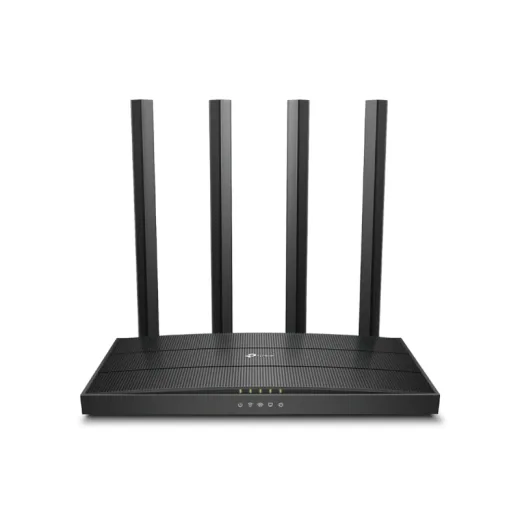
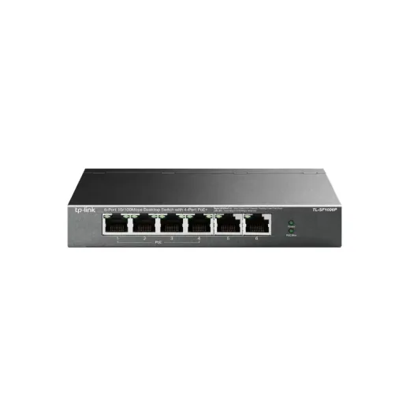
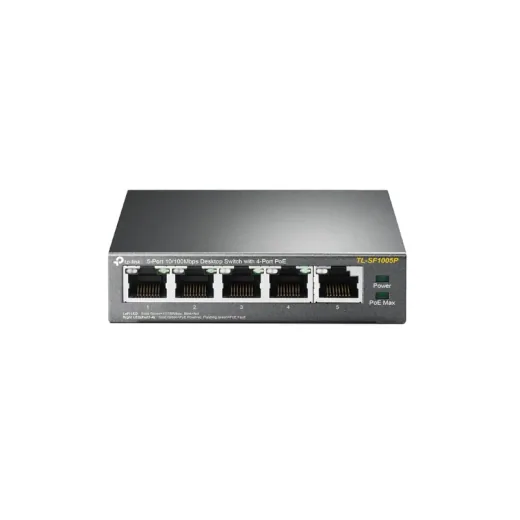
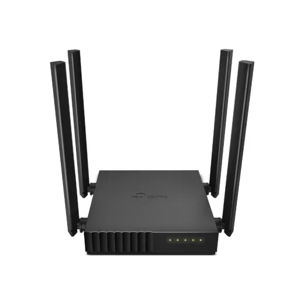
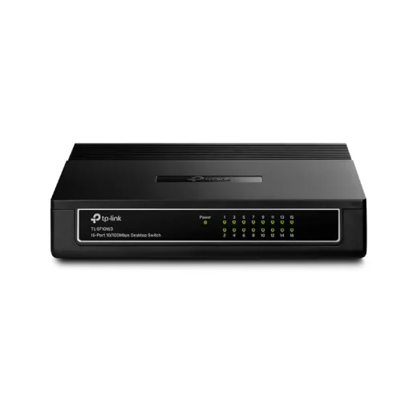

Tp-Link · Modelo RE505X
Repetidor Tp-Link 1500Mbps Dual Band 5Ghz Dual Band Ax1500
L 1,569
En Acosa
Precio en cada tienda
| Tienda | Precio | Antes | Disponibilidad | |
|---|---|---|---|---|
| Acosa | L 1,569 | — | Disponible | Ver en tienda › |
Precios referenciales tomados de cada tienda el 28 de noviembre de 2026. El precio válido es el que muestra la tienda al comprar.
Historial de precio
Lo seguimos desde el 16 de noviembre. Precio más bajo registrado: L 1,569 en Acosa (16 de noviembre), igual que hoy. El precio no ha cambiado en ese tiempo.
Características
| Marca | TP-Link |
|---|---|
| Número de parte | RE505X |
| Garantía | 12 Meses |
Descripción
Extensor de Red Wi-Fi 6 AX1500
• Alta velocidad Wi- Fi 6 de Doble Banda. Navega a más velocidad hasta 1500Mbps y con mayor estabilidad gracias a las dos bandas de 5 GHz (1201 Mbps) y 2,4 GHz (300 Mbps) de la tecnología Wi-Fi 6
• Conexión estable sin cortes. Crea una red Mesh inalámbrica en segundos con la tecnología TP-Link OneMesh ™ para aumentar la cobertura Wi-Fi en casa
• LED de señal inteligente. Ayuda a encontrar la mejor ubicación para tener una cobertura Wi-Fi óptima
• Modo Punto de acceso Ethernet Gigabit. Mejora la conexión en dispositivos por cable a través del puerto Ethernet Gigabit y por conexión inalámbrica
• Fácil control por App. Configura tu extensión de red cómodamente desde el móvil con la App TP-Link Tether
• Máxima compatibilidad. Funciona con cualquier router o punto de acceso inalámbrico
Otros routers y redes Tp-Link
 Router Tp-Link 1201Mbps Inalambrico 5Ghz Ax1500 Dual Band Wifi 6L 1,495En Acosa
Router Tp-Link 1201Mbps Inalambrico 5Ghz Ax1500 Dual Band Wifi 6L 1,495En Acosa
Router Tp-Link 1900Mbps Inalambrico-N 2.4Ghz Doble Banda AC1900 Mu-MimoL 1,644.99En Acosa
Switch 6 Puertos 10/100 Mbps C/Poe+ 4 Puertos Tp-Link Para Escritorio Tl-Sf1006PL 1,299.01En Acosa
Switch 5 Puertos 10/100 Mbps C/Poe+ 4 Puertos Tp-Link P/Escritorio Tl-Sf1005PL 1,119En Acosa Repetidor Tp-Link 300Mbps 2.4Ghz D/Pared Access Point Re315L 1,045.01En Acosa
Repetidor Tp-Link 300Mbps 2.4Ghz D/Pared Access Point Re315L 1,045.01En Acosa Repetidor Tp-Link 750Mbps Dual Band 2.4Ghz D/Pared Re205 Ac750L 1,045.01En Acosa
Repetidor Tp-Link 750Mbps Dual Band 2.4Ghz D/Pared Re205 Ac750L 1,045.01En Acosa
Router Tp-Link 1200mbps Inalambrico 2.4ghz Ac1200 Dual Band 4 Antenas ExterL 939En Acosa
Switch 16 Puertos 10/100 Mbps Tp-Link De Escritorio Tl-Sf1016DL 869En Acosa